คู่มือใช้งานเครื่องมือ · ระดับ Free
สมบัติไอน้ำและน้ำ
Steam & Water Properties
FREE
สำหรับช่างเทคนิคที่เพิ่งเริ่มงาน — อ่านแล้วทำตามได้เอง
ใช้เวลาฝึกประมาณ 30 นาที
เคสตัวอย่าง: โรงงาน A หม้อไอน้ำ 10 bar g น้ำป้อน 105 °C
อ.หนึ่ง กลับทวี / Aj. Nueng Klubtavee
tripleeenergytools.com
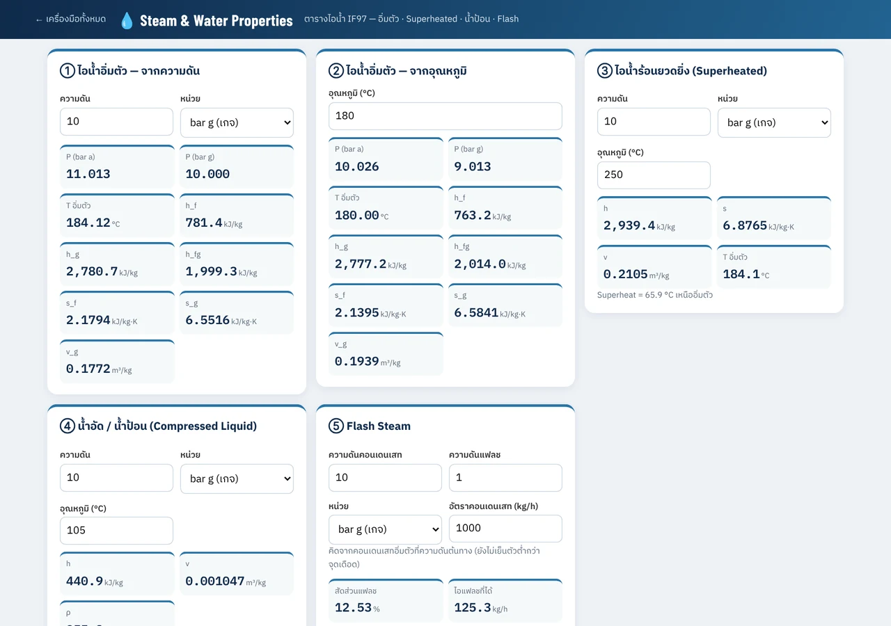
หน้าจอเครื่องมือ — เปิดได้จากเมนู Free ของเว็บไซต์
รุ่นเครื่องมือ: Free commit 8a6bc96 · จับภาพ 16 พ.ย. 2569 · คู่มือ Rev01
เครื่องมือนี้ตอบคำถามอะไร
คู่มือใช้งาน · สมบัติไอน้ำและน้ำ (Steam & Water Properties) · ระดับ Free
2 / 21
| คำถามหน้างาน | ใช้การ์ดไหน | เคสโรงงาน A ได้ |
|---|---|---|
| ไอน้ำที่เกจอ่าน 10 bar ร้อนกี่องศา ให้ความร้อนเท่าไร | ① อิ่มตัว — จากความดัน | 184.12 °C · h_fg 1,999.3 kJ/kg |
| วัดอุณหภูมิได้ 180 °C ความดันควรเป็นเท่าไร | ② อิ่มตัว — จากอุณหภูมิ | 9.013 bar g |
| ไอร้อนยวดยิ่ง 250 °C มีพลังงานเท่าไร | ③ ไอน้ำร้อนยวดยิ่ง | h 2,939.4 kJ/kg |
| น้ำป้อน 105 °C มีความร้อนอยู่แล้วเท่าไร | ④ น้ำอัด / น้ำป้อน | h 440.9 kJ/kg |
| คอนเดนเสทลดความดันแล้ว ได้ไอแฟลชเท่าไร | ⑤ Flash Steam | 12.53 % = 125.3 kg/h |
| อยากได้ตารางไอน้ำไว้ดูหน้างาน | ⑥ ตารางไอน้ำอิ่มตัว | 16 แถว (0–15 bar g) |
💡 เคล็ดลับ
เครื่องมือนี้ไม่มีปุ่มคำนวณ — ผลเปลี่ยนทันทีที่พิมพ์ และแต่ละการ์ดใช้แยกกันได้
แผนที่หน้าจอ: 6 การ์ด
คู่มือใช้งาน · สมบัติไอน้ำและน้ำ (Steam & Water Properties) · ระดับ Free
3 / 21
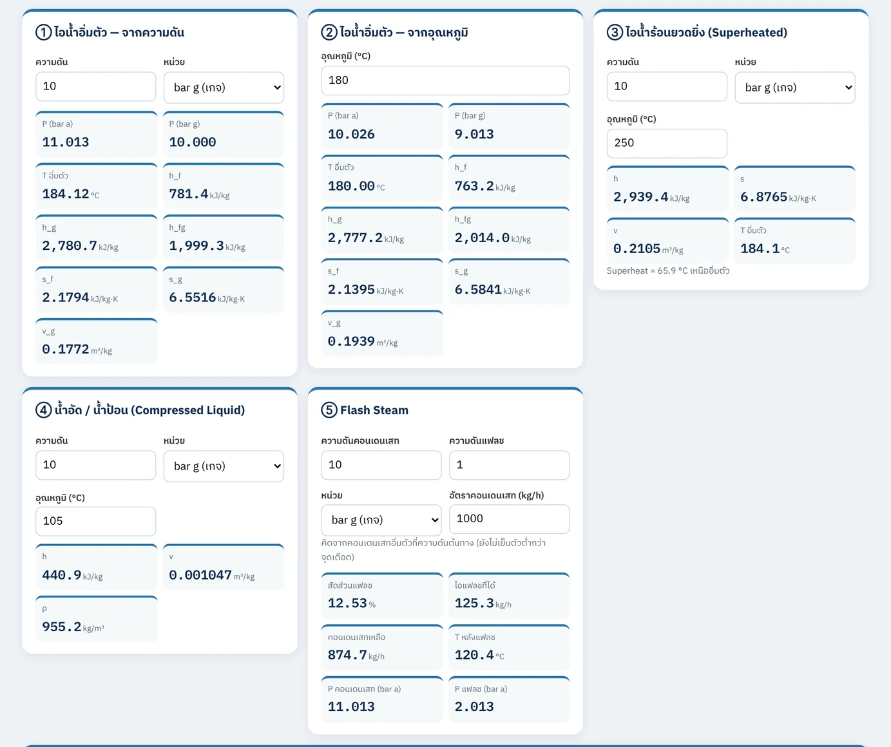
1
2
3
4
5
6
1
① อิ่มตัว — จากความดัน (ใช้บ่อยที่สุด)
2
② อิ่มตัว — จากอุณหภูมิ
3
③ ไอน้ำร้อนยวดยิ่ง
4
④ น้ำอัด / น้ำป้อน
5
⑤ Flash Steam
6
⑥ ตารางไอน้ำอิ่มตัว
ช่องกรอกอยู่บน ผลอยู่ล่างในการ์ดเดียวกัน
ค่าทั้งหมดคำนวณตามสูตรสมบัติน้ำและไอน้ำ IAPWS-IF97
💡 เคล็ดลับ
หน้านี้ไม่มีปุ่มบันทึก — ต้องการเก็บผลให้พิมพ์หน้าจอ (Ctrl+P) เป็น PDF
เปิดบนมือถือ และสลับภาษา
คู่มือใช้งาน · สมบัติไอน้ำและน้ำ (Steam & Water Properties) · ระดับ Free
4 / 21
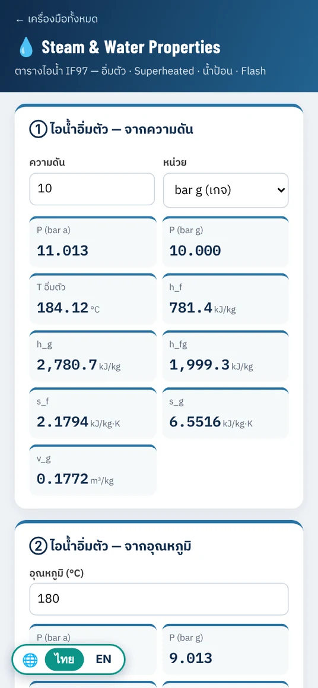
ใช้บนมือถือได้ — การ์ดเรียงเป็นคอลัมน์เดียว เลื่อนลงเพื่อดูการ์ดถัดไป
ปุ่ม ไทย | EN ลอยอยู่ด้านล่าง กดสลับภาษาได้ ค่าที่กรอกไว้ไม่หาย
พิมพ์ตัวเลขแล้วผลเปลี่ยนทันที ไม่ต้องกดปุ่ม
ปิดหน้าเว็บแล้วเปิดใหม่ ทุกช่องกลับเป็นค่าตั้งต้น (10 bar g)
⚠️ ระวัง
ทุกการ์ดมีช่อง หน่วย: bar g (เกจ) หรือ bar a (สัมบูรณ์) — ค่าตั้งต้นคือ bar g ตรงกับเกจหน้างาน
คำศัพท์ 7 คำที่ต้องรู้ก่อนเริ่ม
คู่มือใช้งาน · สมบัติไอน้ำและน้ำ (Steam & Water Properties) · ระดับ Free
5 / 21
| คำ | ความหมายแบบสั้น | จำง่าย ๆ |
|---|---|---|
| bar g · bar a | bar g = ความดันที่เกจอ่าน (เทียบบรรยากาศ) · bar a = ความดันสัมบูรณ์ | bar a = bar g + 1.013 |
| ไอน้ำอิ่มตัว | ไอน้ำที่อุณหภูมิเท่าจุดเดือดของความดันนั้นพอดี | หนึ่งความดัน หนึ่งอุณหภูมิ |
| h_f | ความร้อนในน้ำร้อนที่จุดเดือด (kJ ต่อ kg) | ความร้อนของน้ำ |
| h_fg | ความร้อนแฝง — ความร้อนที่ไอน้ำคายเมื่อกลั่นตัว | ส่วนที่กระบวนการใช้จริง |
| h_g | ความร้อนรวมของไอน้ำอิ่มตัว | h_g = h_f + h_fg |
| v_g | ปริมาตรของไอน้ำ 1 kg (m³/kg) | ใช้คิดขนาดท่อ |
| ไอร้อนยวดยิ่ง · Flash | ไอร้อนยวดยิ่ง = ไอที่ร้อนเกินจุดเดือด · Flash = ไอที่เกิดเองเมื่อน้ำร้อนถูกลดความดัน | — |
💡 เคล็ดลับ
s_f และ s_g คือเอนโทรปี ใช้กับงานกังหันไอน้ำ — งานหม้อไอน้ำทั่วไปข้ามได้
เตรียมข้อมูลก่อนเริ่ม
คู่มือใช้งาน · สมบัติไอน้ำและน้ำ (Steam & Water Properties) · ระดับ Free
6 / 21
| การ์ด | ข้อมูลที่ต้องมี | แหล่งข้อมูล | ค่าโรงงาน A |
|---|---|---|---|
| ① | ความดันไอน้ำ และรู้ว่าเป็น bar g หรือ bar a | เกจวัดความดันที่หม้อไอน้ำหรือที่จุดใช้ | 10 bar g |
| ② | อุณหภูมิไอน้ำหรือผิวท่อ | เทอร์โมมิเตอร์ที่ท่อไอน้ำ | 180 °C |
| ③ | ความดัน และอุณหภูมิไอร้อนยวดยิ่ง | เกจและเทอร์โมมิเตอร์หลัง superheater | 10 bar g · 250 °C |
| ④ | ความดัน และอุณหภูมิน้ำป้อน | เทอร์โมมิเตอร์ที่ท่อน้ำป้อนเข้าหม้อไอน้ำ | 10 bar g · 105 °C |
| ⑤ | ความดันคอนเดนเสทก่อนกับดักไอน้ำ · ความดันถังแฟลช · ปริมาณคอนเดนเสท | เกจที่เครื่องใช้ไอน้ำและที่ถังแฟลช | 10 → 1 bar g · 1,000 kg/h |
| ⑥ | ช่วงความดันที่ต้องการ | — | 0–15 bar g |
⚠️ ระวัง
ดูช่อง หน่วย ของทุกการ์ดก่อนกรอก — เอกสารบางฉบับให้ค่าเป็น bar a ต้องเปลี่ยนหน่วยให้ตรง
ขั้นที่ 1
การ์ด ①: ไอน้ำอิ่มตัวจากความดัน
คู่มือใช้งาน · สมบัติไอน้ำและน้ำ (Steam & Water Properties) · ระดับ Free
7 / 21
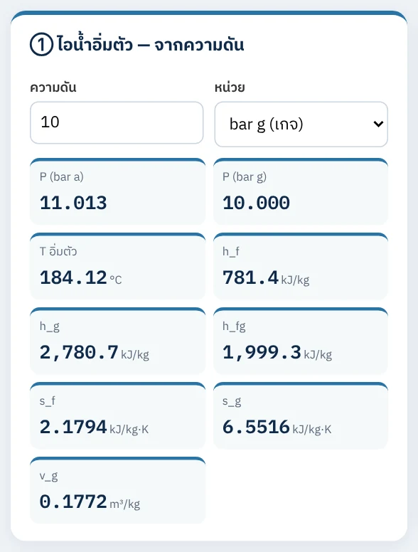
1
2
3
1
ความดัน ที่อ่านได้
2
หน่วย — ค่าจากเกจใช้ bar g (ค่าตั้งต้น)
3
ผล 9 ค่า: ความดันทั้งสองหน่วย · อุณหภูมิอิ่มตัว · h_f · h_g · h_fg · s_f · s_g · v_g
10 bar g = 11.013 bar a · ไอน้ำร้อน 184.12 °C
ความร้อนแฝง h_fg = 1,999.3 kJ/kg · ความร้อนรวม h_g = 2,780.7 kJ/kg
ไอน้ำ 1 kg มีปริมาตร 0.1772 m³
⚠️ ระวัง
เลือกหน่วยผิดเป็น bar a ผลจะเป็นของ 10 bar a (= 8.987 bar g) — ได้ 179.89 °C แทน 184.12 °C · ช่องผล P (bar a) และ P (bar g) บอกเสมอว่าเครื่องมือใช้ค่าใด
อ่านผลการ์ด ①: แต่ละค่าใช้ทำอะไร
คู่มือใช้งาน · สมบัติไอน้ำและน้ำ (Steam & Water Properties) · ระดับ Free
8 / 21
| ค่า | โรงงาน A | ใช้ทำอะไร |
|---|---|---|
| T อิ่มตัว | 184.12 °C | อุณหภูมิสูงสุดที่ไอน้ำให้กับกระบวนการได้ · ใช้ทวนกับเทอร์โมมิเตอร์ |
| h_f | 781.4 kJ/kg | ความร้อนที่ยังเหลือในคอนเดนเสท — ส่วนที่ควรนำกลับ |
| h_fg | 1,999.3 kJ/kg | ความร้อนที่กระบวนการได้จากไอน้ำ 1 kg เมื่อกลั่นตัว |
| h_g | 2,780.7 kJ/kg | ใช้คิดประสิทธิภาพหม้อไอน้ำ (วิธีตรง) คู่กับ h ของน้ำป้อน |
| v_g | 0.1772 m³/kg | ใช้คิดความเร็วไอน้ำในท่อและขนาดท่อ |
หม้อไอน้ำต้องใส่ความร้อนให้ไอน้ำ 1 kg = h_g − h น้ำป้อน = 2,780.7 − 440.9 = 2,339.8 kJ/kg (h น้ำป้อนมาจากการ์ด ④)
💡 เคล็ดลับ
ตรวจผลเร็ว ๆ: h_f + h_fg ต้องเท่ากับ h_g เสมอ
ลองเปลี่ยนค่า (What-if): ความดันไอน้ำ
คู่มือใช้งาน · สมบัติไอน้ำและน้ำ (Steam & Water Properties) · ระดับ Free
9 / 21
| ความดัน | T อิ่มตัว (°C) | h_fg (kJ/kg) | h_g (kJ/kg) | v_g (m³/kg) |
|---|---|---|---|---|
| 5 bar g | 158.92 | 2,085.4 | 2,756.2 | 0.3149 |
| 10 bar g (โรงงาน A) | 184.12 | 1,999.3 | 2,780.7 | 0.1772 |
| 15 bar g | 201.42 | 1,934.1 | 2,792.9 | 0.1236 |
ทำเอง: แก้ช่องความดันของการ์ด ① → อ่านผล → แก้กลับเป็น 10
ความดันสูงขึ้น ไอน้ำร้อนขึ้น แต่ความร้อนแฝงต่อ kg ลดลง
ความดันสูงขึ้น ปริมาตรไอน้ำเล็กลงมาก — ส่งไอน้ำที่ความดันสูงใช้ท่อเล็กกว่า
จุดใช้งานควรใช้ความดันต่ำที่สุดที่ยังได้อุณหภูมิที่กระบวนการต้องการ — ได้ความร้อนแฝงต่อ kg มากกว่า
ขั้นที่ 2
การ์ด ②: ไอน้ำอิ่มตัวจากอุณหภูมิ
คู่มือใช้งาน · สมบัติไอน้ำและน้ำ (Steam & Water Properties) · ระดับ Free
10 / 21
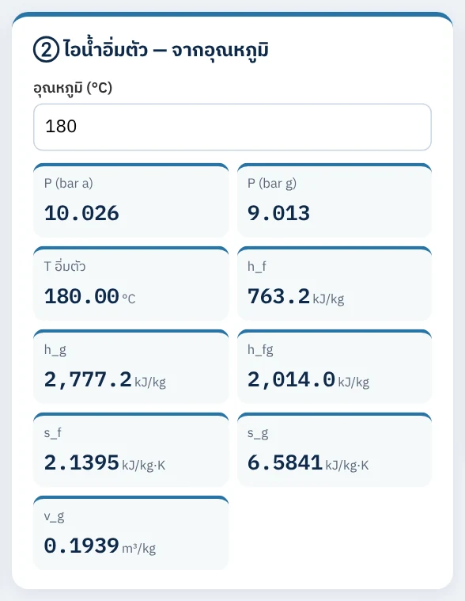
1
2
1
อุณหภูมิ ที่วัดได้ (°C)
2
ผลชุดเดียวกับการ์ด ① — ความดันอิ่มตัว 10.026 bar a = 9.013 bar g
ไอน้ำอิ่มตัวมีอุณหภูมิเดียวต่อหนึ่งความดัน — รู้ตัวหนึ่งก็รู้อีกตัว
ใช้ทวนเกจ: เทอร์โมมิเตอร์อ่าน 180 °C เกจควรอ่านใกล้ 9.013 bar g
เกจกับเทอร์โมมิเตอร์ไม่ตรงกันมาก — ตัวใดตัวหนึ่งเสีย หรือไอน้ำไม่ใช่ไออิ่มตัว
ขั้นที่ 3
การ์ด ③: ไอน้ำร้อนยวดยิ่ง
คู่มือใช้งาน · สมบัติไอน้ำและน้ำ (Steam & Water Properties) · ระดับ Free
11 / 21
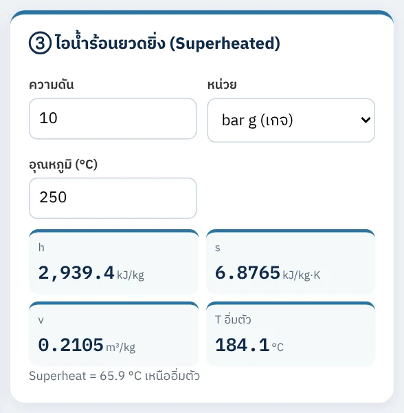
1
2
3
4
5
1
ความดัน
2
หน่วย (bar g / bar a)
3
อุณหภูมิไอน้ำ — ต้องสูงกว่าอุณหภูมิอิ่มตัว
4
ผล: h 2,939.4 kJ/kg · s · v 0.2105 m³/kg · T อิ่มตัว 184.1 °C
5
Superheat = 65.9 °C เหนืออิ่มตัว
ไอร้อนยวดยิ่ง 250 °C มีความร้อนมากกว่าไออิ่มตัวที่ความดันเดียวกัน 2,939.4 − 2,780.7 = 158.7 kJ/kg
เพิ่มเป็น 300 °C: h 3,049.0 kJ/kg · Superheat 115.9 °C
ใช้กับหม้อไอน้ำที่มี superheater และงานกังหันไอน้ำ
ขั้นที่ 4
การ์ด ④: น้ำป้อน
คู่มือใช้งาน · สมบัติไอน้ำและน้ำ (Steam & Water Properties) · ระดับ Free
12 / 21
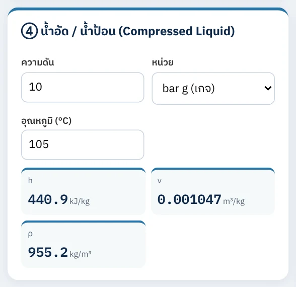
1
2
3
4
1
ความดัน ของน้ำ (ใช้ความดันหม้อไอน้ำได้)
2
หน่วย
3
อุณหภูมิน้ำป้อน (°C)
4
ผล: h 440.9 kJ/kg · v 0.001047 m³/kg · ความหนาแน่น 955.2 kg/m³
h ของน้ำขึ้นกับอุณหภูมิเป็นหลัก — ความดันมีผลน้อยมาก
ความหนาแน่นใช้แปลงมาตรวัดน้ำป้อนจาก m³ เป็น kg (น้ำ 105 °C เบากว่าน้ำเย็น)
💡 เคล็ดลับ
ค่า h นี้คือ h น้ำป้อนในสูตรประสิทธิภาพหม้อไอน้ำวิธีตรง
ลองเปลี่ยนค่า (What-if): อุณหภูมิน้ำป้อน
คู่มือใช้งาน · สมบัติไอน้ำและน้ำ (Steam & Water Properties) · ระดับ Free
13 / 21
| อุณหภูมิน้ำป้อน | h น้ำป้อน (kJ/kg) | ความร้อนที่หม้อไอน้ำต้องใส่ต่อไอน้ำ 1 kg (kJ/kg) |
|---|---|---|
| 30 °C (น้ำดิบ ไม่มีคอนเดนเสทกลับ) | 126.7 | 2,654.0 |
| 60 °C | 252.1 | 2,528.6 |
| 105 °C (โรงงาน A) | 440.9 | 2,339.8 |
ทำเอง: แก้ช่องอุณหภูมิของการ์ด ④ → อ่าน h → ลบออกจาก h_g ของการ์ด ①
น้ำป้อนยิ่งร้อน หม้อไอน้ำยิ่งใส่ความร้อนน้อยลง — ที่ประสิทธิภาพหม้อไอน้ำเท่าเดิม เชื้อเพลิงลดลงตามสัดส่วนเดียวกัน
วิธีทำให้น้ำป้อนร้อนขึ้น: นำคอนเดนเสทกลับ · ใช้ไอแฟลช · ติด economizer
ขั้นที่ 5
การ์ด ⑤: Flash Steam
คู่มือใช้งาน · สมบัติไอน้ำและน้ำ (Steam & Water Properties) · ระดับ Free
14 / 21
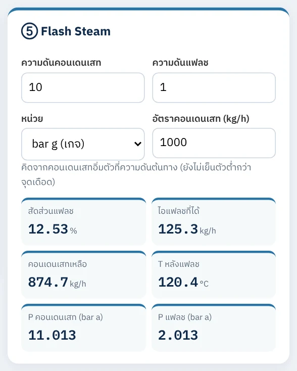
1
2
3
4
5
1
ความดันคอนเดนเสท ก่อนลดความดัน
2
ความดันแฟลช — ความดันของถังหรือท่อปลายทาง
3
หน่วย ของความดันทั้งสองช่อง
4
อัตราคอนเดนเสท (kg/h)
5
ผล: แฟลช 12.53 % = 125.3 kg/h · คอนเดนเสทเหลือ 874.7 kg/h · 120.4 °C
คอนเดนเสทร้อนที่ถูกลดความดัน เดือดเองบางส่วนกลายเป็นไอ — ไอนี้นำไปใช้ต่อได้
เครื่องมือคิดจากคอนเดนเสทที่จุดเดือดของความดันต้นทาง (บรรทัดสีเทาใต้ช่องกรอก)
💡 เคล็ดลับ
ช่องผลสองช่องท้ายแสดงความดันที่ใช้คำนวณเป็น bar a (11.013 และ 2.013) — ใช้ตรวจว่าเลือกหน่วยถูก
ลองเปลี่ยนค่า (What-if): ความดันแฟลช
คู่มือใช้งาน · สมบัติไอน้ำและน้ำ (Steam & Water Properties) · ระดับ Free
15 / 21
| ความดันแฟลช | สัดส่วนแฟลช (%) | ไอแฟลช (kg/h) | อุณหภูมิหลังแฟลช (°C) |
|---|---|---|---|
| 1 bar g (โรงงาน A) | 12.53 | 125.3 | 120.4 |
| 0.5 bar g | 14.08 | 140.8 | 111.6 |
| 0 bar g (ปล่อยออกบรรยากาศ) | 16.06 | 160.6 | 100.0 |
ทำเอง: แก้ช่องความดันแฟลชของการ์ด ⑤ → อ่านผล → แก้กลับเป็น 1
ความดันแฟลชยิ่งต่ำ ได้ไอแฟลชมากขึ้น แต่ไอเย็นลง — เลือกความดันให้ตรงกับจุดที่จะนำไอไปใช้
ปล่อยคอนเดนเสทออกบรรยากาศ ไอน้ำที่ลอยทิ้งคือ 160.6 kg ต่อคอนเดนเสท 1,000 kg — ทั้งความร้อนและน้ำหายไป
ขั้นที่ 6
การ์ด ⑥: ตารางไอน้ำอิ่มตัว
คู่มือใช้งาน · สมบัติไอน้ำและน้ำ (Steam & Water Properties) · ระดับ Free
16 / 21
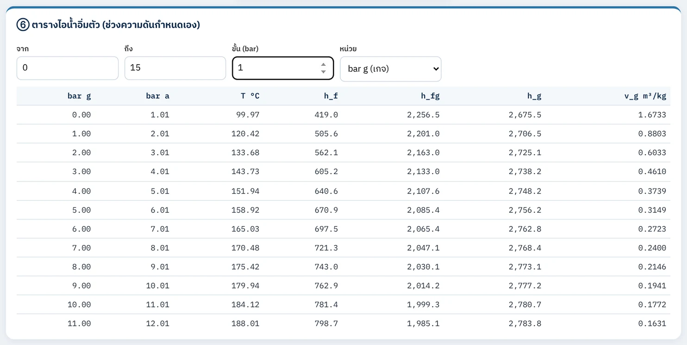
1
2
3
4
5
1
จาก
2
ถึง
3
ขั้น — ระยะห่างของแต่ละแถว (bar)
4
หน่วย — คอลัมน์แรกของตารางเป็นหน่วยที่เลือก
5
ตาราง: bar g · bar a · T · h_f · h_fg · h_g · v_g
ตัวอย่างแถว 7 bar g: 7.00 | 8.01 | 170.48 | 721.3 | 2,047.1 | 2,768.4 | 0.2400
ตารางแสดงได้สูงสุด 120 แถว — ช่วงกว้างให้เพิ่มค่า "ขั้น"
พิมพ์ตารางติดห้องหม้อไอน้ำ: กำหนดช่วงที่ใช้งานจริง แล้วพิมพ์หน้าจอ (Ctrl+P)
ข้อความเตือนเมื่อค่าอยู่นอกช่วง
คู่มือใช้งาน · สมบัติไอน้ำและน้ำ (Steam & Water Properties) · ระดับ Free
17 / 21
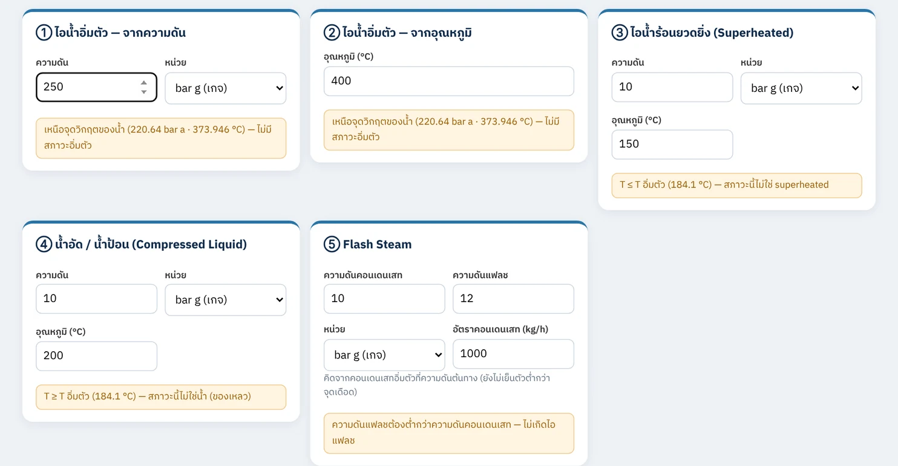
① / ② ความดันเกิน 220.64 bar a หรืออุณหภูมิเกิน 373.946 °C — เหนือจุดวิกฤตของน้ำ ไม่มีสภาวะอิ่มตัว
③ อุณหภูมิไม่สูงกว่าอุณหภูมิอิ่มตัว — ยังไม่ใช่ไอร้อนยวดยิ่ง ให้ใช้การ์ด ①
④ อุณหภูมิถึงจุดเดือดของความดันนั้นแล้ว — ไม่ใช่น้ำ ให้ตรวจความดันหรืออุณหภูมิที่กรอก
⑤ ความดันแฟลชไม่ต่ำกว่าความดันคอนเดนเสท — ไม่เกิดไอแฟลช
⚠️ ระวัง
เห็นกรอบสีเหลือง = ค่าที่กรอกไม่ตรงกับสภาวะของการ์ดนั้น — ส่วนใหญ่มาจากหน่วยความดันผิด (bar g / bar a)
ข้อผิดพลาดที่พบบ่อย
คู่มือใช้งาน · สมบัติไอน้ำและน้ำ (Steam & Water Properties) · ระดับ Free
18 / 21
✗ ไม่ดูช่องหน่วย
✓ ค่าจากเกจคือ bar g · ค่าจากตารางไอน้ำในตำรามักเป็น bar a — เลือกหน่วยให้ตรง
✗ ใช้ความดันหม้อไอน้ำแทนความดันที่จุดใช้
✓ ไอน้ำผ่านวาล์วลดความดันแล้ว — ใช้ความดันที่จุดใช้งาน
✗ ใช้ h_g เป็นความร้อนที่กระบวนการได้
✓ กระบวนการได้ h_fg — h_f ยังอยู่ในคอนเดนเสท
✗ ใช้การ์ด ① กับไอร้อนยวดยิ่ง
✓ ไอที่ร้อนเกินจุดเดือดต้องใช้การ์ด ③
✗ คิดว่า h น้ำป้อนขึ้นกับความดัน
✓ ขึ้นกับอุณหภูมิเป็นหลัก — วัดอุณหภูมิให้ถูกสำคัญกว่า
✗ ใช้ปริมาณไอน้ำแทนปริมาณคอนเดนเสทในการ์ด ⑤
✓ กรอกคอนเดนเสทที่เข้าถังแฟลชจริง
✗ อ่านอุณหภูมิผิวท่อเป็นอุณหภูมิไอน้ำ
✓ ผิวท่อเย็นกว่าไอน้ำข้างใน — ใช้ทวนคร่าว ๆ เท่านั้น
✗ ไม่เก็บผล
✓ หน้านี้ไม่มีปุ่มบันทึก — พิมพ์เป็น PDF หรือจดค่า
แบบฝึกหัด: โรงงาน B
คู่มือใช้งาน · สมบัติไอน้ำและน้ำ (Steam & Water Properties) · ระดับ Free
19 / 21
| ข้อมูล | ค่า |
|---|---|
| ความดันไอน้ำที่เกจ (การ์ด ①) | 7 bar g |
| น้ำป้อน (การ์ด ④) | 7 bar g · 80 °C |
| คอนเดนเสท → ถังแฟลช (การ์ด ⑤) | 7 → 0.5 bar g |
| อัตราคอนเดนเสท | 600 kg/h |
คำถาม — กรอกแล้วตอบ
1
อุณหภูมิไอน้ำ = ______ °C · h_fg = ______ kJ/kg
2
h น้ำป้อน = ______ kJ/kg
3
ความร้อนที่ต้องใส่ต่อไอน้ำ 1 kg = ______ kJ/kg
4
ไอแฟลช = ______ % = ______ kg/h
💡 เคล็ดลับ
ตรวจช่องหน่วยของการ์ด ① ④ ⑤ ว่าเป็น bar g ก่อนกรอก
เฉลยแบบฝึกหัด โรงงาน B
คู่มือใช้งาน · สมบัติไอน้ำและน้ำ (Steam & Water Properties) · ระดับ Free
20 / 21
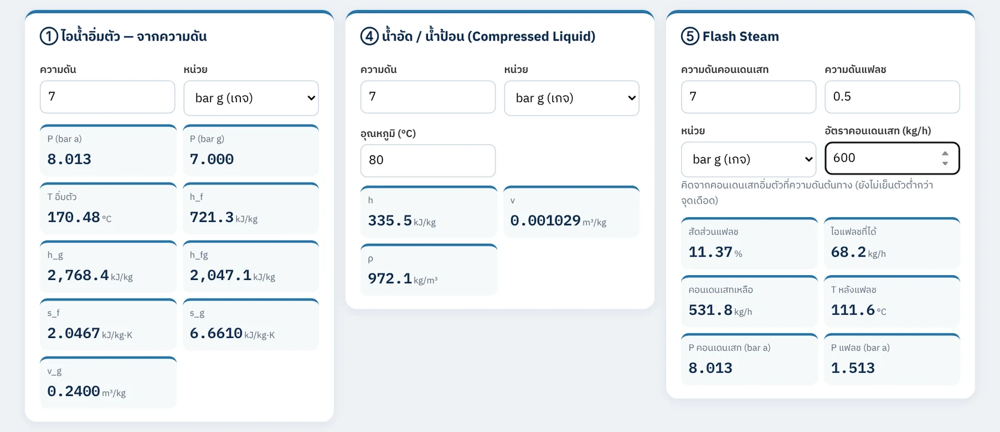
1) 7 bar g = 8.013 bar a → 170.48 °C · h_fg 2,047.1 kJ/kg · h_g 2,768.4 kJ/kg
2) น้ำป้อน 80 °C → h 335.5 kJ/kg
3) 2,768.4 − 335.5 = 2,432.9 kJ/kg
4) แฟลช 11.37 % = 68.2 kg/h · คอนเดนเสทเหลือ 531.8 kg/h ที่ 111.6 °C
✓ ผ่าน
ได้ตัวเลขตรงกัน = ใช้เครื่องมือเป็นแล้ว · ภาพแสดงเฉพาะการ์ดที่ใช้ในแบบฝึก (① ④ ⑤)
สรุป 1 หน้า (พิมพ์ติดไว้ข้างคอมพิวเตอร์)
คู่มือใช้งาน · สมบัติไอน้ำและน้ำ (Steam & Water Properties) · ระดับ Free
21 / 21
1
การ์ด ①
ความดัน + หน่วย → T · h_f · h_fg · h_g · v_g
2
การ์ด ②
อุณหภูมิ → ความดันอิ่มตัว (ทวนเกจ)
3
การ์ด ③
ความดัน + อุณหภูมิ → h ไอร้อนยวดยิ่ง
4
การ์ด ④
อุณหภูมิน้ำป้อน → h · ความหนาแน่น
5
การ์ด ⑤
ความดันคอนเดนเสท → แฟลช + หน่วย → % และ kg/h ไอแฟลช
6
การ์ด ⑥
ช่วงความดัน + หน่วย → ตารางไอน้ำ
อ่านผลแล้วตรวจ
☐
เกจ = bar g · ตำรา = bar a → ดูช่องหน่วย
☐
bar a = bar g + 1.013
☐
h_f + h_fg = h_g
☐
ความร้อนที่ต้องใส่ = h_g − h น้ำป้อน
☐
กรอบเหลือง = ตรวจหน่วยและค่าที่กรอก
อ.หนึ่ง กลับทวี / Aj. Nueng Klubtavee
tripleeenergytools.com
tripleeenergytools.com